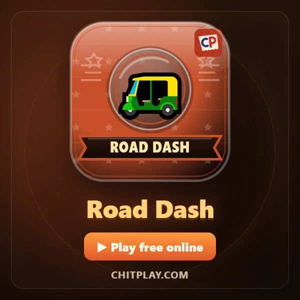
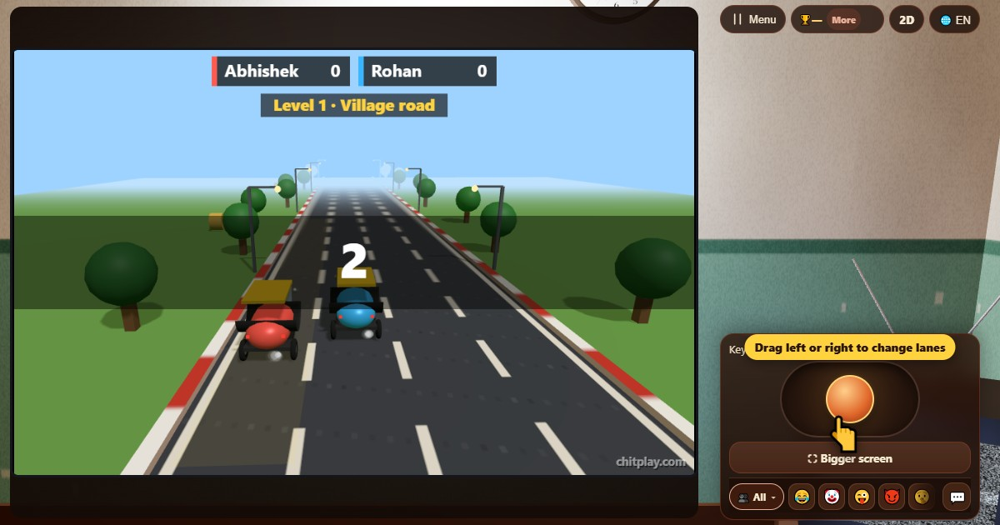
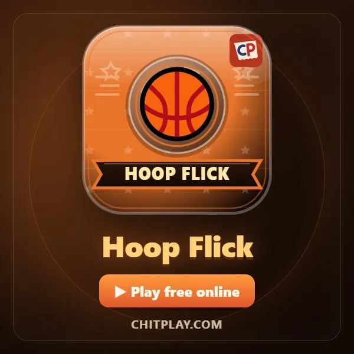
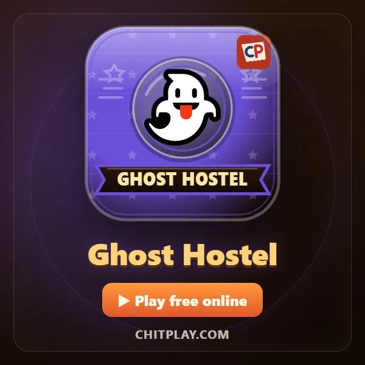
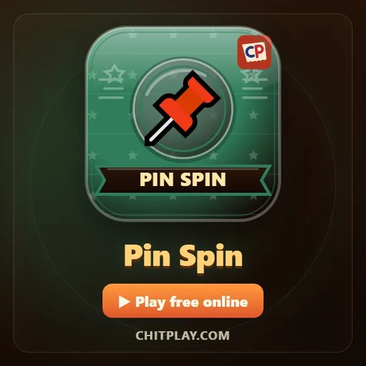
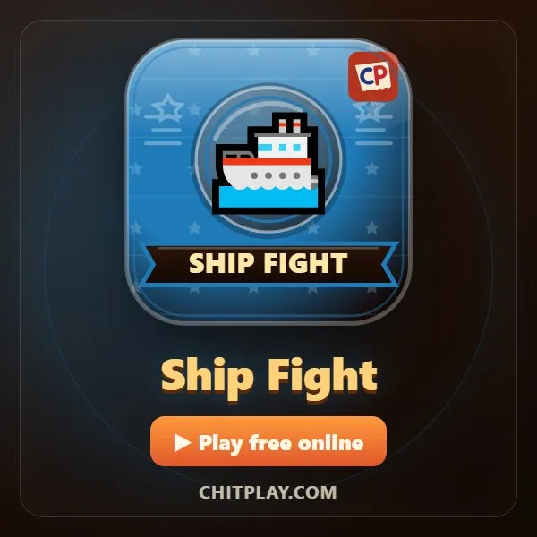

Road Dash (Road Dash)
- 👥 1–4 joueurs
- Jeux d'arcade (sur la télé, en 3D)
- 🆓
Guide en français
Un tuk-tuk sur une route sans fin. Évitez vaches et bus, ramassez les pièces.
English name: Road Dash

Comment jouer
- Appuie à gauche ou à droite (fais glisser le stick, A et D, ou les flèches) pour changer de voie.
- Évite les vaches, les nids-de-poule, les bus et les autres rickshaws.
- Ramasse des pièces pour des points en plus.
- La route accélère à mesure que tu tiens, et environ tous les 100 points arrive un nouveau niveau avec une nouvelle circulation. Un seul accident termine ta partie.
Points
Tu marques pour la distance parcourue, et 5 par pièce.
Qui gagne
Seul, bats ton meilleur score. À plusieurs, le meilleur score gagne.
Questions fréquentes
La route finit-elle un jour ?
Non. Elle va de plus en plus vite, et chaque niveau apporte une nouvelle circulation : des bus, puis deux obstacles à la fois, puis des rickshaws qui foncent sur toi.
Mes amis peuvent-ils faire la course avec moi ?
Oui, jusqu'à quatre partagent la même route, sur un écran ou chacun sur son téléphone.
Façons de jouer
- En invité: Ni inscription ni connexion. Choisissez un nom et jouez tout de suite.
- Contre l'ordinateur: Quand personne n'est là, des joueurs de l'ordinateur prennent les places libres. Facile, normal ou difficile.
- En ligne: Asseyez-vous à une table publique avec des joueurs du monde entier.
- Entre amis, à proximité: Lancez la partie sur un téléphone et partagez le code ou le QR. Vos amis rejoignent depuis leur téléphone.
- Sur un seul téléphone: Passez-vous le téléphone à tour de rôle : un seul appareil suffit pour toute la famille.
Autres langues
- हिन्दी: रोड डैश
- Hinglish: Road Dash
- Español: Road Dash
- Português: Road Dash
- Deutsch: Road Dash
- Bahasa Indonesia: Road Dash
- Türkçe: Road Dash
- Italiano: Road Dash
- 日本語: ロードダッシュ
- 한국어: 로드 대시
- 中文: 公路冲刺
- Русский: Дорожный рывок
- اردو: روڈ ڈیش
- नेपाली: रोड ड्यास
- বাংলা: রোড ড্যাশ
- English: Road Dash · Règles complètes (anglais)
Tous les jeux
 Flying Chit
Flying Chit Tunnel Race
Tunnel Race Turbo Tunnel
Turbo Tunnel Temps de réaction
Temps de réaction
Hoop Flick
Ghost Hostel
Pin Spin
Ship Fight
ChitPlay ne comporte ni argent réel, ni paris, ni prix. Les points n'ont aucune valeur.